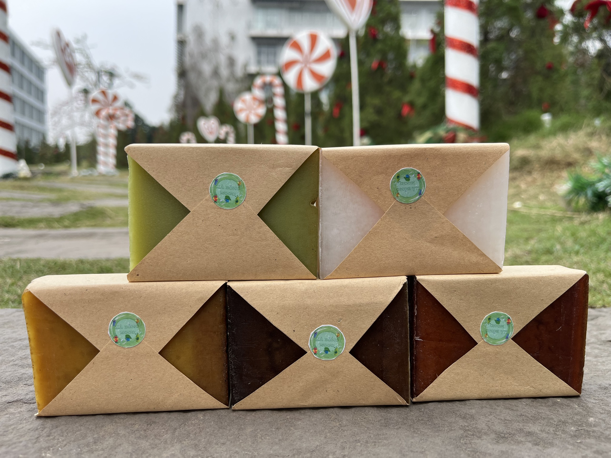

Q&A
Giải đáp những câu hỏi thường gặp trước khi bạn chọn một mùi hương cho riêng mình.
Phần hỏi đáp này được viết ngắn gọn, rõ ràng để người dùng mới vẫn dễ hình dung cách sử dụng, thành phần và cách bảo quản xà phòng handmade tốt nhất.

Hỏi đáp nhanh
Các thông tin thiết yếu để bạn dùng sản phẩm đúng cách và bền hơn.
Xà Bông Mood có phù hợp để dùng hằng ngày không?
Có. Sản phẩm được định hướng cho nhu cầu sử dụng hằng ngày trên tay và cơ thể với cảm giác làm sạch dịu, bọt êm và lưu hương nhẹ.
Thành phần nổi bật của xà phòng là gì?
Các công thức ưu tiên dầu thực vật, glycerin và chiết xuất thảo mộc theo từng mùi hương để giữ cảm giác gần gũi, lành tính và dễ sử dụng.
Làm sao để bảo quản bánh xà phòng handmade lâu hơn?
Bạn nên đặt xà phòng ở nơi khô ráo, thoáng khí và có khay thoát nước tốt sau mỗi lần sử dụng để bánh khô nhanh và ít bị mềm.
Nên chọn mùi hương nào nếu tôi thích cảm giác tươi mát?
Bạc hà và Khổ qua là hai lựa chọn phù hợp nếu bạn thích cảm giác thanh mát, sạch thoáng và bảng màu xanh gần thiên nhiên.
Sản phẩm có phù hợp để làm quà tặng không?
Phù hợp. Xà Bông Mood có hình ảnh hiện đại, màu sắc hài hòa và mang tinh thần sống xanh nên rất thích hợp cho những món quà nhỏ nhưng tinh tế.